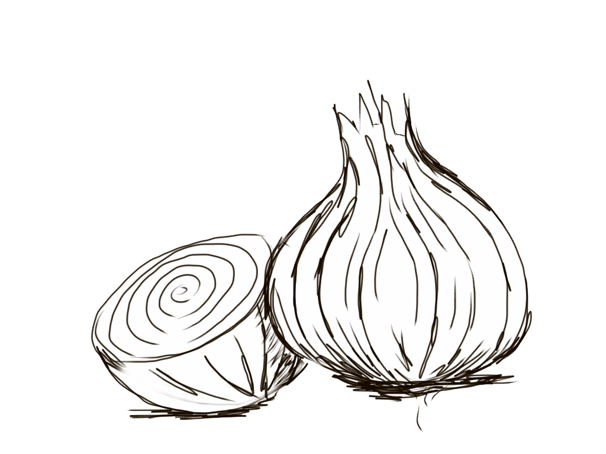

Rich and Simple French Onion Soup
Go back
Source material is here

What is it?
We have been trying French onion soup in restaurants for years, and my family and friends agree — none can compare to my recipe for taste and simplicity of preparation.
Ingredients
- ½ cup unsalted butter
- 2 tablespoons olive oil
- 4 cups sliced onions
- 5 cups beef broth
- 2 tablespoons dry sherry
- 1 teaspoon dried thyme
- 1 pinch salt and pepper to taste
- 4 slices French bread
- 4 slices provolone cheese
- 2 slices Swiss cheese, diced
- ¼ cup grated Parmesan cheese
How-to
- Gather all ingredients.
- Melt butter with olive oil in an 8-quart stock pot over medium heat. Add onions to butter and continually stir until tender and translucent. Do not brown the onions.
- Add beef broth, sherry, and thyme. Season with salt and pepper. Let simmer for 30 minutes.
- Meanwhile, preheat the oven's broiler.
- Ladle soup into oven-safe serving bowls and place one slice of bread on top of each (bread may be broken into pieces if you prefer). Layer each slice of bread with a slice of provolone, 1/2 slice diced Swiss and 1 tablespoon Parmesan cheese.
- Place bowls on a cookie sheet and broil in the preheated oven until cheese bubbles and browns slightly, 2 to 3 minutes.
- Serve hot and enjoy!
Go back